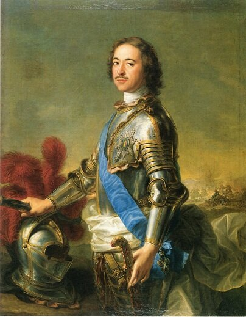
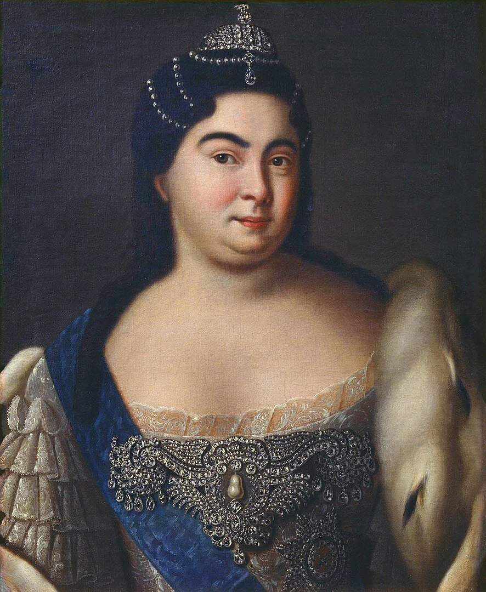
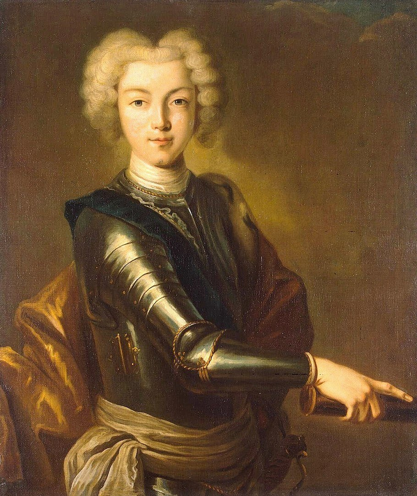

Дисконт в теории игр.
В теории игр, дисконт — текущая
стоимость денежной единицы будущего периода, умноженная на вероятность
повторения игры для игр с неизвестным числом
повторений.
Залоговый дисконт.
Разница между реальной рыночной
стоимостью залогового имущества и его залоговой
стоимостью, используемой для определения суммы выдаваемого
банком кредита.
Петр I Алексеевич (1672 - 1725)

Правил 43 года, первые 7 лет за него правила регентша,
Софья Алексеевна. Поскольку царевна Софья добровольно с
престола уходить не хотела, Петру пришлось свергать сестру силой.
С имени Петра I начинается история Российской империи, в которой он стал
первым императором.
Екатерина I Алексеевна (1684-1727)

Правила 2 года. Вступила на престол как вдова императора при поддержке офицеров
гвардии и вельмож. Будучи по происхождению литовской крестьянкой, к
управлению государством была не способна и по сути за Екатерину все решения
принимали князь Меньшиков и Верховный Тайный Совет.
Петр II Алексеевич (1715-1730)

Правил 3 года. Вступил на престол после смерти Екатерины I,
будучи внуком Петра I. Был последним представителем династии Романовых по
прямой мужской линии. Стал императором в 11 лет и способностей к управлению страной
не проявлял, вся власть вновь сосредоточилась в руках Верховного Тайного Совета и вельмож.
Умер в 14 лет от оспы.